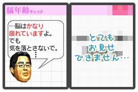
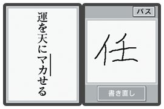

切実なキャッチをつけてしまいましたが、ショックな結果が出たゆえの話です。
このソフトは『脳の年齢』を測定し、かつ継続プレイすることで活性化(＝若返り)させるのが目的。
最初に、脳年齢の測定を行うのです…が…実年齢よりだいぶん年上の結果(ちょっと書けません)が出ると、立ち直れなくなるほどのショック！
これは、非常に、マズイ。ということで、腕まくりしてＤＳ本体に向き合いました！

１日１回しか脳年齢の測定はできませんが、『毎日トレーニング』を選択すると、心ゆくまで様々なジャンルのトレーニングがプレイできます。
例えば『漢字書取』は、タッチペンで国語のテストのように出題された漢字を直接書くもの。
これは昔取った杵柄、100点でクリアーです。おそらく義務教育レベルの漢字ですから、書けなかったら一大事ですよ。
ほかにも同一の数字を連続して引き続ける『連続減算』、数字から四則演算の記号を当てる『算術記号』などなど、内容は盛りだくさん。
|
|